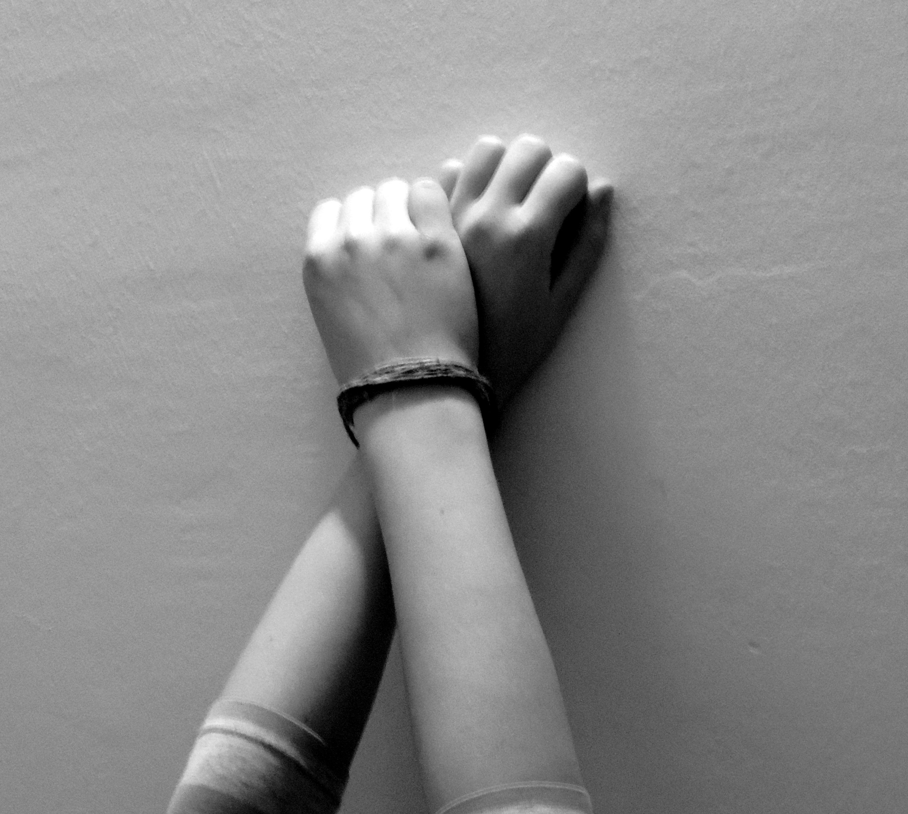

Prisilna prostitutka je ženska ali dekle, ki je tako ali drugače prisiljena v ponujanje in opravljanje spolnih storitev, in sicer ne glede na to, ali se prostituira zase ali za koga drugega, prostovoljna pa tista, ki se je odločila za tovrstno delo sama po svoji prosti volji. Ali je prostitutka prostovoljna ali ne, kažejo predvsem okoliščine, ki so jo pripeljale v prostitucijo. Pri ugrabljenih in zavedenih, na silo ali s prevaro, ni dvoma da gre za prisiljeno prostitucijo. Kam pa sodijo ženske in dekleta, katerim država ne zagotavljajo ne dela ne socialnega in zdravstvenega varstva? To so države, ki danes ne kažejo nobenega znamenja kratkoročnega ali dolgoročnega izhoda iz gospodarske krize. Te ženske in dekleta imajo na voljo le beračenje, prisilno delo kakršnekoli vrste ali smrt. V korak z revščino gresta tudi neizobraženost in obup. Te ženske zaidejo v povsem brezizhoden položaj. Denar zaslužen s prostituiranjem, pogosto namenijo za vzdrževanje družine. V takih primerih države igrajo vlogo legitimnega trgovca z ljudmi.
 Nazaj